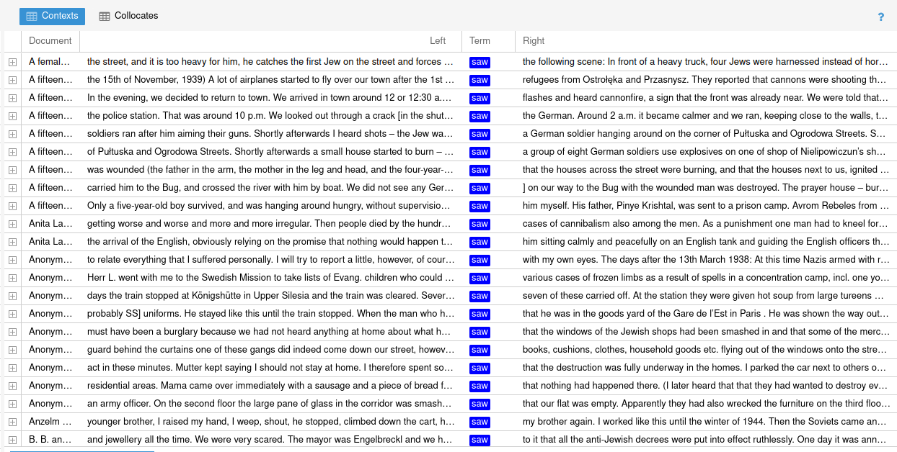

<!DOCTYPE html>
<html lang="en">
  <head>
    <meta charset="utf-8" />
    <meta name="viewport" content="width=device-width, initial-scale=1.0, maximum-scale=1.0, user-scalable=no" />

    <title></title>
    <link rel="stylesheet" href="dist/reveal.css" />
    <link rel="stylesheet" href="dist/theme/simple.css" id="theme" />
    <link rel="stylesheet" href="plugin/highlight/zenburn.css" />
	<link rel="stylesheet" href="css/layout.css" />
	<link rel="stylesheet" href="plugin/customcontrols/style.css">


    <script defer src="dist/fontawesome/all.min.js"></script>

	<script type="text/javascript">
		var forgetPop = true;
		function onPopState(event) {
			if(forgetPop){
				forgetPop = false;
			} else {
				parent.postMessage(event.target.location.href, "app://obsidian.md");
			}
        }
		window.onpopstate = onPopState;
		window.onmessage = event => {
			if(event.data == "reload"){
				window.document.location.reload();
			}
			forgetPop = true;
		}

		function fitElements(){
			const itemsToFit = document.getElementsByClassName('fitText');
			for (const item in itemsToFit) {
				if (Object.hasOwnProperty.call(itemsToFit, item)) {
					var element = itemsToFit[item];
					fitElement(element,1, 1000);
					element.classList.remove('fitText');
				}
			}
		}

		function fitElement(element, start, end){

			let size = (end + start) / 2;
			element.style.fontSize = `${size}px`;

			if(Math.abs(start - end) < 1){
				while(element.scrollHeight > element.offsetHeight){
					size--;
					element.style.fontSize = `${size}px`;
				}
				return;
			}

			if(element.scrollHeight > element.offsetHeight){
				fitElement(element, start, size);
			} else {
				fitElement(element, size, end);
			}		
		}


		document.onreadystatechange = () => {
			fitElements();
			if (document.readyState === 'complete') {
				if (window.location.href.indexOf("?export") != -1){
					parent.postMessage(event.target.location.href, "app://obsidian.md");
				}
				if (window.location.href.indexOf("print-pdf") != -1){
					let stateCheck = setInterval(() => {
						clearInterval(stateCheck);
						window.print();
					}, 250);
				}
			}
	};


        </script>
  </head>
  <body>
    <div class="reveal">
      <div class="slides"><section  data-markdown><script type="text/template"><!-- .slide: class="drop" -->
<div class="" style="position: absolute; left: 0px; top: 0px; height: 700px; width: 960px; min-height: 700px; display: flex; flex-direction: column; align-items: center; justify-content: center" absolute="true">

## “What Is Not in the Archives”

### Early Holocaust Testimony as Research Data

Michal Frankl <!-- .element: style="color: grey; align: left" -->

Masaryk Institute and Archives, Czech Academy of Sciences <!-- .element: style="font-size: large; color: grey; margin-top: 0px; margin-bottom: 0px" "="true" -->

<!-- .element: style="font-size: large; margin-top: 0px" -->


</div></script></section><section  data-markdown><script type="text/template"><!-- .slide: class="drop" -->
<div class="" style="position: absolute; left: 0px; top: 0px; height: 700px; width: 960px; min-height: 700px; display: flex; flex-direction: column; align-items: center; justify-content: center" absolute="true">


Kurt Ball-Kaduri, Tel Aviv 1961 <!-- .element: style="font-size: medium" -->

Yad Vashem Archives<!-- .element: style="font-size: medium; color: grey; margin-top: 0px" -->
</div>

<aside class="notes"><p>The title of this talk borrows from the little known documentation project of Kurt Ball-Kaduri who - starting with 1943 - set out to collect testimonies of Jews who escaped persecution in Nazi Germany to Palestine. &quot;Was nicht in den Archiven steht&quot; (What is not in the archives) was a one-man snowballing activity in which he - until the end of the 1950s - recorded, edited and typed down more than three hundred first-hand accounts.</p>
</aside></script></section><section  data-markdown><script type="text/template"><!-- .slide: class="drop" -->
<div class="" style="position: absolute; left: 0px; top: 0px; height: 700px; width: 960px; min-height: 700px; display: flex; flex-direction: column; align-items: center; justify-content: center" absolute="true">


Jewish Central Historical Commission in Poland, 1946 <!-- .element: style="font-size: medium" -->

Yad Vashem Archives <!-- .element: style="font-size: medium; color: grey; margin-top: 0px" -->
</div>

<aside class="notes"><p>In a brief time period of two or three years, or even a few months, after the libration, Jewish activists around Europe collected thousands of testimonies. More than three thousand were taken in Poland, by the Jewish Historical Commission which started to operate in the liberated Lublin in 1944, about four thousand in Hungary by DEGOB, the relief organisation attending to deportees, and some 2500 by a committee operating in DP camps in Germany. Until up the 1950s, the Wiener Library in London assembled about one thousand of &quot;eye-witness accounts&quot;.</p>
</aside></script></section><section  data-markdown><script type="text/template"><!-- .slide: class="drop" -->
<div class="" style="position: absolute; left: 0px; top: 0px; height: 700px; width: 960px; min-height: 700px; display: flex; flex-direction: column; align-items: center; justify-content: center" absolute="true">


</div>

<aside class="notes"><p>Or here in Turin, the as of then virtually unknown Auschwitz survivor Primo Levi and Leonardo De Benedetti published a report on sanitary and medical organization in the Monowitz camp (which they wrote shortly after their liberation) - one of a number of reports and depositions Levi wrote alongside his better known works such as <em>If this is a Man</em> (the first version of which appeared - &quot;almost inivisibly&quot;, as a biographer noted, here in Turin in 1947).</p>
<p>Together with many smaller collections or the David Boder&#39;s audio archive, and with testimonies dispersed in post-war retribution, compensation or welfare files, this makes a remarkable corpus which we only start to appreciate and understand. One that remains underused as source and understudied as a phenomenon in its own right.</p>
</aside></script></section><section  data-markdown><script type="text/template"><!-- .slide: class="drop" -->
<div class="" style="position: absolute; left: 0px; top: 0px; height: 700px; width: 960px; min-height: 700px; display: flex; flex-direction: column; align-items: center; justify-content: center" absolute="true">


</div>

<aside class="notes"><p>Therefore, today I&#39;ll focus on testimonies created as a part of what has been called the &quot;early&quot; documentation of the Holocaust. </p>
<p>Some partial studies notwithstanding, comparative research is mostly missing, as is serious research of the language(s) used in these testimonies. My reflections are partially based on the online edition of the Early Holocaust Testimony published by the European Holocaust Research Infrastructure (EHRI). It provides a well-annotated selection from several archives in English and the original language, including a new batch of testimonies in Yiddish - which are particularly neglected due to the language barrier. (In general, EHRI editions - although relatively limited in extent - seem to be the best usable annotated source documents available as research data.)</p>
<ul>
<li>I&#39;ll speak from the perspective of a historian keenly watching the progress in digital humanities and in the NLP.</li>
</ul>
<p>While I - on the one hand want to make case for more attention to these early testimonies as subject of research, as source and - indeed - as a corpus, I also think that they are useful lens through which broader issues of Holocaust testimony and language, and by extension the promise or challenges of natural language processing can be illuminated.</p>
</aside></script></section><section  data-markdown><script type="text/template"><!-- .slide: class="drop" -->
<div class="" style="position: absolute; left: 0px; top: 0px; height: 700px; width: 960px; min-height: 700px; display: flex; flex-direction: column; align-items: center; justify-content: center" absolute="true">


Recovery of the Ringelblum Archive <!-- .element: style="font-size: medium; margin-top: 0px" -->

Yad Vashem Archives <!-- .element: style="font-size: medium; color: grey; margin-top: 0px" -->
</div>

<aside class="notes"><p>Recently, historians started to challenge the &quot;myth of the silence&quot; according to which the Holocaust remained largely forgotten until the trial in Jerusalem with Adolf Eichmann in 1961, used as a stage to perform the stories and emotions of Holocaust survivors. </p>
<p>Some of these projects originated already during the persecution (such as the archive of Alfred Wiener or the above mentioned work of Kurt Ball). Clandestine projects, often in ghettos and camps, were the basis of at least some post-war archives - for example  Emanuel Ringelblum&#39;s archive (Oyneg Shabes) of the Warsaw ghetto or the Theresienstadt documentation saveguarded by the prisoner of the ghetto and Zionist activist Zeev Sheck.  the Oyneg Shabes archive was - mostly - recovered from the ruines of the Warsaw ghetto, and Sheck&#39;s documents were schlepped from the liberated ghetto Theresienstadt to Prague in a heavy suitcases by his fiancée (she had to leave her few personal items in Theresienstadt, she told me many years later).</p>
<p>Historian Laura Jockusch and others examined the work of the Jewish historical commissions which spontaneously appeared - in one form or another - in most European countries. Inspired by earlier attempts to document pogroms, such as those which took place in late Russian empire, these initiatives advanced modern grass-root social research methods, in the sense of the historian Simon Dubnow. The documentation efforts were only possible with the help of dozens, or hundreds, of <em>zamlers</em>, or collectors.</p>
<ul>
<li>part of a broader <em>khurbn-literatur</em>, studies of the &quot;catastrophe&quot;, to use the Yiddish term for the Holocaust<ul>
<li>The <em>Polish Jews</em> series in Argentine, and much more</li>
</ul>
</li>
</ul>
<!-- CONTEXT -->

<!-- FIXME: screenshot USC SF? -->

<p>Let me start with the particular social setting of the production of these testimonies, continue with their validation strategies and finish by looking at their archivation and transformation into research data.</p>
<p>The setting and social context, as we know - especially from research focused on oral history interviews, is a key to understanding testimony: this is - I argue - even more important for the &quot;early&quot; testimony.</p>
<p>We are all familiar with the image (as in the USC Visual History Archive) of the - now aging - survivor who is seated in her or his home, suggesting at least a degree of being settled and stable, and towards the end interview is surrounded by family or showing family photographs, pre- and post-war, suggesting a succesful re-building of life.</p>
<ul>
<li>The early testimonies, especially those taken in the first few years after the liberation, are anything like that. </li>
<li>Historian Sharon Kangisser Cohen, reading the testimonies published in the EHRI edition, highlighted that the context of the time the testimonies were captured &quot;is wider than the individuals’ story and perspective&quot; and the interviews provide &quot;researchers with a window into the social, cultural, and political realities of that time.&quot;^[<a href="https://early-testimony.ehri-project.eu/exhibits/show/about/kangisser-cohen-introduction%5D">https://early-testimony.ehri-project.eu/exhibits/show/about/kangisser-cohen-introduction]</a></li>
<li>Both survivors giving their testimony and their interviewers, also mostly survivors, spoke and wrote while they were still finding out the fate of their families and rebuilding their lives. Many were also on the move - in Poland specifically also because of antisemitism; their testimonies were taken in different situations along their migration trajectories.</li>
</ul>
</aside></script></section><section  data-markdown><script type="text/template"><!-- .slide: class="drop" -->
<div class="" style="position: absolute; left: 0px; top: 0px; height: 700px; width: 960px; min-height: 700px; display: flex; flex-direction: column; align-items: center; justify-content: center" absolute="true">


DEGOB relief activities <!-- .element: style="font-size: medium; margin-top: 0px" -->

Yad Vashem Archives <!-- .element: style="font-size: medium; color: grey; margin-top: 0px" -->
</div></script></section><section  data-markdown><script type="text/template"><!-- .slide: class="drop" -->
<div class="" style="position: absolute; left: 0px; top: 0px; height: 700px; width: 960px; min-height: 700px; display: flex; flex-direction: column; align-items: center; justify-content: center" absolute="true">


DEGOB relief activities <!-- .element: style="font-size: medium; margin-top: 0px" -->

Yad Vashem Archives <!-- .element: style="font-size: medium; color: grey; margin-top: 0px" -->
</div>

<aside class="notes"><ul>
<li>The witnesses thus found hemselves in a highly volatile and vulnerable situation and in many cases, documentation and welfare went hand-in-glove. This is most apparent in Hungary, where the testimonies were taken by the DEGOB, a relief committee. Narrators thus were in a situation of dependence on their interviewers and in a way, financial, material and other assistance was exchanged for an account of persecution history.</li>
</ul>
</aside></script></section><section  data-markdown><script type="text/template"><!-- .slide: class="drop" -->
<div class="" style="position: absolute; left: 0px; top: 0px; height: 700px; width: 960px; min-height: 700px; display: flex; flex-direction: column; align-items: center; justify-content: center" absolute="true">


Co-workers of the Documentation Campaign in Prague, 1946 <!-- .element: style="font-size: medium; margin-top: 0px" -->

Courtesy of Rachel Shek<!-- .element: style="font-size: medium; color: grey; margin-top: 0px" -->
</div>

<aside class="notes"><ul>
<li><p>illustrative: Czech Zionist Zeev Sheck, the head of the Czechoslovak Documentation Campaign, even had to request a set of cloths from the Jewish community, he was still wearing the dress he came with from camps</p>
<ul>
<li>Sheck himself collected testimonies and documents while he was preparing his own Aliyah, immigration to Palestine; and the project found itself in decline after his departure in early 1946.</li>
</ul>
</li>
<li><p>How witnessing in an in-between situation affected the language of these testimonies remains, in my view, a matter for further research. It is, however, an impetus to understand testimony not only as the result, the document, but as a result of social interaction and an act of witnessing</p>
<ul>
<li>&shy;<!-- .element: class="fragment" data-fragment-index="1" -->according to Judith Lindenberg, this makes it possible &quot;to consider [these writings] in the thickness and multiplicity of their meanings [...]”.[@lindenbergPremiersSavoirs2017, 13-14]</li>
</ul>
</li>
<li><p>Hannah Pollin-Galay, identified three different genres - or ecologies of witnessing - in which survivors talk about the Holocaust in Lithuania, depending on place, language and many other factors - all related to communal making sense of the past. One question for today might be, what this means for turning testimonies into research data and probing them with NLP methods.</p>
</li>
</ul>
</aside></script></section><section  data-markdown><script type="text/template"><!-- .slide: class="drop" -->
<div class="" style="position: absolute; left: 0px; top: 0px; height: 700px; width: 960px; min-height: 700px; display: flex; flex-direction: column; align-items: center; justify-content: center" absolute="true">

<!-- EVIDENCE -->


Protocol of the Documentation Campaign in Prague <!-- .element: style="font-size: medium; margin-top: 0px" -->

Jewish Museum in Prague<!-- .element: style="font-size: medium; color: grey; margin-top: 0px" -->
</div></script></section><section  data-markdown><script type="text/template"><!-- .slide: class="drop" -->
<div class="" style="position: absolute; left: 0px; top: 0px; height: 700px; width: 960px; min-height: 700px; display: flex; flex-direction: column; align-items: center; justify-content: center" absolute="true">


Protocol of the Documentation Campaign in Prague <!-- .element: style="font-size: medium; margin-top: 0px" -->

Jewish Museum in Prague<!-- .element: style="font-size: medium; color: grey; margin-top: 0px" -->
</div>

<aside class="notes"><p>According to philosophical and epistemological research in testimony, and somewhat surprising to me, a testimony is any form of communication from others through which we gain knowledge of the world - in fact, it is indispensable for our being social. More narrowly, however, the most typical modes of testimony, those which still inform our notions of what testimony actually is, is religious testimony (originally especially the lives and miracles of saints) and criminal testimony. The many intersections in Holocaust research and remembrance notwithstanding, and while the later testimonies, in the &quot;era of the witness&quot; (Anette Wiewiorka) might be increasingly close to sanctification of testimony and the witnessing survivor, the early testimony was much closer to the second mode.</p>
<!-- Laurence Dougles -->

<ul>
<li><p>Criminal investigation of war-time crimes, from Nuremberg to national retribution trials made an obvious context, and the Jewish historical commissions often closely cooperated by delivering documents and suggesting witnesses - some tensions (for instance with respect to the Jewish councils) notwithstanding.</p>
</li>
<li><p>The documentation was also more broadly guided by notions of justice in the post-war order, and social and ethnic re-ordering.</p>
<ul>
<li>For instance, the Documentation Campaign in Prague supported, through documents and art work, the notion of the guilt of (Czechoslovak) Germans and support for their expulsion from post-WWII Czechoslovakia</li>
</ul>
</li>
<li><p>Early testimony was significantly co-structured by the language and logic of criminal trials and evidence needed to convict the perpetrators, and thus by the demand for objectivity and to be verifyable:</p>
<ul>
<li>already for Emanuel Ringelblum, as noted by Zoe Waxman, truthg this wasn&#39;t to be established by a single witness, but rather by &quot;gathering of many different testimonies&quot; [@waxmanWritingHolocaust2006, 19]</li>
<li>demand for fact, names of perpetrators and focus on specific episodes</li>
<li>format of protocols, stamps and signatures, including secondary witnesses (those present when the testimony was delivered): DEGOB and the Documentation Campaign<ul>
<li>The Wiener Library, launching its &quot;Jewish Survivors&#39; Reports&quot;, or &quot;eye-witness accounts&quot;, in the 1950s considered it &quot;a safeguard against any future attempts to falsify the events of those years&quot;.[@barkowAlfredWiener1997, 121] </li>
<li>DEGOB protocols uniformly start with the phrase: &quot;The person in question has given s the following information:&quot; and continue in third person (which was likely considered more objective and descriptive, and also indicated the filtering and editorial impact of the interviewer)</li>
</ul>
</li>
<li>The testimonies advance objectivity rather than the subjective personal or family story, perception or trauma<ul>
<li>Consider Kurt Ball-Kaduri: &quot;When I begin today to report on the 5 weeks I spent in the Sachsenhausen concentration camp [...], it is my intention not only to speak of myself, but to describe the conditions in the camp on the basis of my observations.&quot; (and again a similar formulation in another of his testimonies)</li>
</ul>
</li>
</ul>
</li>
<li><p>Early testimony is a form of witnessing in view of the reception gap and distrust of atrocity stories which were difficult to believe (and might be propaganda, as was known from the WWI)</p>
<ul>
<li>David Shneer, for instance, demonstrated how Western media distrusted the Soviet photographs of liberated concentration camps; and how Soviet media introduced the personal account of the journalist physically present on-site[@shneerPicturingGriefSoviet2010]</li>
<li>In Western tradition, witnessing is strongly defined, as Shoshana Felman reminded us, by &quot;first-hand seeing&quot;. According to her, &quot;[t]he uniqueness of the narrative performance of the testimony in effect proceeds from the witness&#39;s irreplaceable performance of the act of seeing.&quot;[@felmanEraTestimony1991, 41]</li>
<li>To establish this direct connection, early testimonies often employed the metaphor of vision, such as in Wiener Library&#39;s &quot;eye-witness accounts&quot; or Erich Nasch, a Theresienstadt prisoner, writing under the title &quot;Ich habe es gesehen&quot; (I saw it).</li>
</ul>
</li>
</ul>
</aside></script></section><section  data-markdown><script type="text/template"><!-- .slide: class="drop" -->
<div class="" style="position: absolute; left: 0px; top: 0px; height: 700px; width: 960px; min-height: 700px; display: flex; flex-direction: column; align-items: center; justify-content: center" absolute="true">


</div>

<aside class="notes"><ul>
<li>&quot;saw&quot; and &quot;seen&quot; in early testimony<ul>
<li>a Hungarian female former prisoner reported on her arrest in Budapest, deportation to Auschwitz and other camps, using the phrase &quot;I saw&quot; no less than three times on two pages: for instance, &quot;In Camp C I saw many, very many selections.&quot;^[<a href="https://early-testimony.ehri-project.eu/document/EHRI-ET-DEGOB0884%5D">https://early-testimony.ehri-project.eu/document/EHRI-ET-DEGOB0884]</a></li>
<li>Moyshe Broderzon described (in a testimony first published in Moscow during the war) the Nazi usage of propaganda photographs in the Lodz ghetto: a situation when a number of Jews were rounded up, forced to pray and photographed: he introduced the section with &quot;In front of my eyes, the following episode took place&quot;, thus contrasting what he labeled &quot;fake photographs&quot; with his personal, first-hand experience, expressed through direct vision.^[<a href="https://early-testimony.ehri-project.eu/document/EHRI-ET-SOV004%5D">https://early-testimony.ehri-project.eu/document/EHRI-ET-SOV004]</a><ul>
<li><!-- PHOTO of humiliations/prayer? ---></li>
</ul>
</li>
</ul>
</li>
</ul>
<!-- SILENCE - where?-->


<p>The early testimony can be understood not only as a result of the particular historical context, but also as a particular narrative strategy to overcome the silence gap.</p>
<p>All these documents notwithstanding, Primo Levi complained, ten years after liberation (again, in a newspaper here in Turin), about the silence about the camps: he felt that it became &quot;indelicate to talk about the Lagers&quot;. The notion of silence (or perhaps, invisibility), therefore, doesn&#39;t refer to lack of testimonies or other documents, but is rather a statement language and the ability to convey &quot;the unspeakable&quot;.</p>
</aside></script></section><section  data-markdown><script type="text/template"><!-- .slide: class="drop" -->
<div class="" style="position: absolute; left: 0px; top: 0px; height: 700px; width: 960px; min-height: 700px; display: flex; flex-direction: column; align-items: center; justify-content: center" absolute="true">

<!-- ARCHIVING AND RESEARCH DATA -->


Testimony from the Ball-Kaduri collection <!-- .element: style="font-size: medium; margin-top: 0px" -->

Yad Vashem Archives <!-- .element: style="font-size: medium; color: grey; margin-top: 0px" -->
</div>

<aside class="notes"><p>In response to, but perhaps in some tension to his label (What is not in the archives), Ball-Kaduri handed over the entire collection to Yad Vashem where it was cataloged and made available as collection O.1. Later scanned and accessible through Yad Vashem&#39;s online collections, it is an example of the effect of digitization and the seeming eradication of distance and barriers, on Holocaust research. Selected testimones were include in the EHRI edition of the Early Holocaust Testimony.</p>
</aside></script></section><section  data-markdown><script type="text/template"><!-- .slide: class="drop" -->
<div class="" style="position: absolute; left: 0px; top: 0px; height: 700px; width: 960px; min-height: 700px; display: flex; flex-direction: column; align-items: center; justify-content: center" absolute="true">


</div>

<aside class="notes"><p>Kurt Ball&#39;s collection - and our edition - thus trigger us to thinking about the processes of archiving and - if so you want - datafying of testimony.</p>
<p>Researchers already examined the effects and risks coming with turning oral history interviews into data which can be stored in (relational) databases, standardised and retrieved. For instance, Looking at the database built of the USC VHA interviews, Todd Presner pointed out the risk of flattening the rich narrative into a series of selected data points, and elaborated on the ethical issues of visualising narratives based on specific archival ontologies and the data filtered accordingly.</p>
<p>But what if - probing the archives of early testimonies - we reverse the perspective? What if - with the empasis on building evidence of the <em>khurbn</em> generally and against specific perpetrators specifically - these were created as data in the first place, filtering out many aspects of personal experience diverging from the purpose.</p>
</aside></script></section><section  data-markdown><script type="text/template"><!-- .slide: class="drop" -->
<div class="" style="position: absolute; left: 0px; top: 0px; height: 700px; width: 960px; min-height: 700px; display: flex; flex-direction: column; align-items: center; justify-content: center" absolute="true">


Wiener Holocaust Library, EHRI Edition of Early Holocaust Testimony<!-- .element: style="font-size: medium; color: grey; margin-top: 0px" -->
</div>

<aside class="notes"><ul>
<li>WL headers:<ul>
<li>mostly not terms like trauma, family, gender, neighbors, or whatever else many reseearchers would ask today</li>
<li>rather specific places, camps and names</li>
</ul>
</li>
</ul>
</aside></script></section><section  data-markdown><script type="text/template"><!-- .slide: class="drop" -->
<div class="" style="position: absolute; left: 0px; top: 0px; height: 700px; width: 960px; min-height: 700px; display: flex; flex-direction: column; align-items: center; justify-content: center" absolute="true">


Example of a DEGOB testimony header <!-- .element: style="font-size: medium; margin-top: 0px" -->

Hungarian Jewish Museum and Archives<!-- .element: style="font-size: medium; color: grey; margin-top: 0px" -->
</div>

<aside class="notes"><ul>
<li>less developed, but similar classification in DEGOB protocols</li>
<li>arguably, this classification exercised siginificant influence over the cataloguing logic of some of the older Holocaust archives, such as the WL, YV, or JHI</li>
<li>for consideration: the question of how how we should reflect these ontologies: should we build them in, or bypass them? - in any case, we should be aware of their impact and their embedding in particular context</li>
</ul>
<p>But if the testimonies were already recorded as data, doesn&#39;t the potential of NLP lie in -so to say - undatafying them and reconstructing at least some of the aspects of the original conversations and languages?</p>
<ul>
<li>What is not in the archives - in the end - can be Ball-Kaduri&#39;s questions which do not appear in his typed testimonies.</li>
</ul>
<p>The DEGOB collection serves as a prime example of these challenges and opportunities. As Ildikó Barna and Alexandra Szabó remind us, very little is known about the work of the organization and its methodology in assembling this testimonial corpus. It is an example of the widespread phenomenon of interrupted curation of these testimony collections.</p>
<p>In the early 1990s, as the collection was rediscovered, Gábor Murányi reconstructed - or we could say: retro-engineered - the structure of the original questionnaires. He identified repeated thematic blocs such as pre-persecution Jewish communities, concentration in ghettos, deportation from Hungary, arrival to camps, and more.[@barnaExcavatingVoices2023, 80]</p>
<p>Testifying to the exchange of knowledge and experience between the historical commissions, I have - by serependity, actually - identified in the collection of the Prague Documentation Campaign what probably were questions used in Hungary.^[Yad Vashem Archives, O7.CZ, file 264.] The list of (roughly) 75 questions seems to roughly correspond to Murányi&#39;s structure.</p>
<p>In line with the attempt to establish objective facts, the questions on the list often reach beyond what could be expected as immediate individual experience, for instance &quot;When was the camp established,&quot; or &quot;How many inmates were held there?&quot; It is clearly an attempt to esstablish the who and what, when and where of Holocaust history (even if not necessarily why). Also, it functions as a thematic filter.</p>
<p>The structuring impact is obvious. A testimony of a male deportee thus started with &quot;Approximately 4000 Jews lived in Nagyszöllős. Most of them were craftsmen and tradesmen, but there were doctors and a lawyer and an engineer too.&quot;, thus delivering answers to the two first questions from the catalogue: &quot;How many Jewish families lived in your community?&quot; and &quot;What was the main occupation of Jews living there.&quot;^[<a href="https://early-testimony.ehri-project.eu/document/EHRI-ET-DEGOB0090%5D">https://early-testimony.ehri-project.eu/document/EHRI-ET-DEGOB0090]</a> Other protocols, however, don&#39;t correspond that neatly. Such difference may be due to the time of creation and questions used, the interviewer and most importantly, the different narratives. </p>
<p>AI supported NLP, however, could help to reconstruct traces of the original conversation and understand how the normative questionnaire structured the resulting protocols, including the thematic filter and possible silences, but also identify where narrators forced topics not pre-conceived in the questionnaire. </p>
<ul>
<li>example of the possibilities and broader thinking</li>
</ul>
<!--- CONCLUSION -->

<p>To conclude, the point I&#39;m trying to make, through these various perspectives is that turning Holocaust testimony into research data is more than keeping pace with the quickly evolving (often AI-driven) methods, performing NER and enhancing data, or visualising testimony collections in new ways. It is ultimately part of a larger discussion about the possibility, the language(s) of and the reception of Holocaust testimony.</p>
<p>Research ethics with respect to testimony do not include only privacy, but also the need to keep on mind the act of witnessing, a form of social process, in particular social and cultural settings. Methods that we develop and that we will discuss today shouldn&#39;t treat testimony as isolated corpus, but rather keep an eye new possibilities for comparison, intertextuality and possibly intermediality.</p>
<p>In effect, and in reversal of Ball-Kaduri&#39;s words, what is not in the archives.</p>
<p>I&#39;m looking forward...</p>
<!-- -------------- ODLOŽENO ---------------- -->

<ul>
<li>significantly differ in length, style and content from later testimonie</li>
<li>filtering out Polish Jews who survived in the Soviet Union</li>
</ul>
</aside></script></section></div>
    </div>

    <script src="dist/reveal.js"></script>

    <script src="plugin/markdown/markdown.js"></script>
    <script src="plugin/highlight/highlight.js"></script>
    <script src="plugin/zoom/zoom.js"></script>
    <script src="plugin/notes/notes.js"></script>
    <script src="plugin/math/math.js"></script>
	<script src="plugin/mermaid/mermaid.js"></script>
	<script src="plugin/chart/chart.min.js"></script>
	<script src="plugin/chart/plugin.js"></script>
	<script src="plugin/customcontrols/plugin.js"></script>

    <script>
      function extend() {
        var target = {};
        for (var i = 0; i < arguments.length; i++) {
          var source = arguments[i];
          for (var key in source) {
            if (source.hasOwnProperty(key)) {
              target[key] = source[key];
            }
          }
        }
        return target;
      }

	  function isLight(color) {
		let hex = color.replace('#', '');

		// convert #fff => #ffffff
		if(hex.length == 3){
			hex = `${hex[0]}${hex[0]}${hex[1]}${hex[1]}${hex[2]}${hex[2]}`;
		}

		const c_r = parseInt(hex.substr(0, 2), 16);
		const c_g = parseInt(hex.substr(2, 2), 16);
		const c_b = parseInt(hex.substr(4, 2), 16);
		const brightness = ((c_r * 299) + (c_g * 587) + (c_b * 114)) / 1000;
		return brightness > 155;
	}

	var bgColor = getComputedStyle(document.documentElement).getPropertyValue('--r-background-color').trim();
	var isLight = isLight(bgColor);

	if(isLight){
		document.body.classList.add('has-light-background');
	} else {
		document.body.classList.add('has-dark-background');
	}

      // default options to init reveal.js
      var defaultOptions = {
        controls: true,
        progress: true,
        history: true,
        center: true,
        transition: 'default', // none/fade/slide/convex/concave/zoom
        plugins: [
          RevealMarkdown,
          RevealHighlight,
          RevealZoom,
          RevealNotes,
          RevealMath.MathJax3,
		  RevealMermaid,
		  RevealChart,
		  RevealCustomControls,
        ],


    	allottedTime: 120 * 1000,

		mathjax3: {
			mathjax: 'plugin/math/mathjax/tex-mml-chtml.js',
		},
		markdown: {
		  gfm: true,
		  mangle: true,
		  pedantic: false,
		  smartLists: false,
		  smartypants: false,
		},

		mermaid: {
			theme: isLight ? 'default' : 'dark',
		},

		customcontrols: {
			controls: [
			]
		},
      };

      // options from URL query string
      var queryOptions = Reveal().getQueryHash() || {};

      var options = extend(defaultOptions, {"width":960,"height":700,"margin":0.04,"controls":true,"progress":true,"slideNumber":false,"transition":"slide","transitionSpeed":"default"}, queryOptions);
    </script>

    <script>
      Reveal.initialize(options);
    </script>
  </body>

  <!-- created with Advanced Slides -->
</html>
